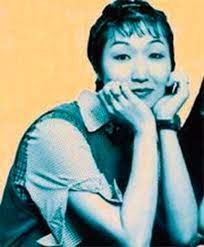

Ai Yazawa, nascida em 7 de março de 1967 em Hyogo, no Japão, é uma autora e desenhista de mangá voltados para o público feminino, tendo muitas obras populares no Japão. Yazawa começou sua carreira de mangaká em 1985; e durante 15 anos consecutivos, escreveu 10 séries para a revista pré-adolescente Ribon. 